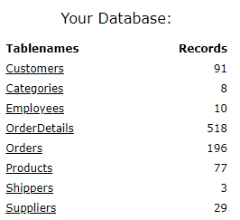
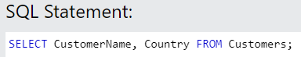
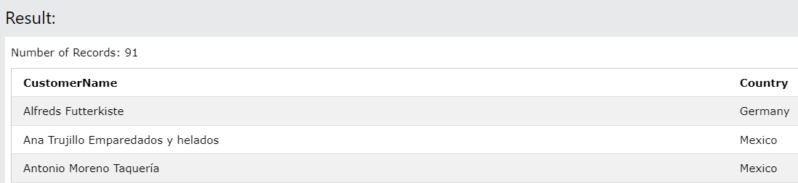
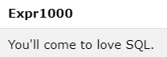
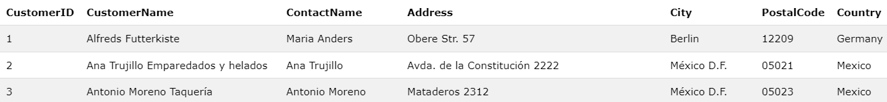

Unit 1, Lesson 1
Learning objectives
After this lesson, you should be able to:
Use SQL to specify the table containing the data you need
Use SQL to specify the column(s) containing the data you need
Use * to select all columns
Explain the purpose of SQL keywords and clauses
Use W3Schools to write and run SQL
W3Schools
W3Schools provides an online SQL tutorial platform the allows you to write and run SQL against a sample database (db). This platform enables you to quickly get hands-on experience using SQL.
Go to this W3Schools web page.
The Database section on the right lists the tables in the db.

Table
A database is made up of tables. How data appears in a spreadsheets or a dataframe is a good analogy for a db table.
Select specific columns
Use this W3Schools page
Enter this SQL and click Run SQL

For brevity, in the future, I’ll just say “Run this SQL”.
After you run the SQL, the W3Schools web page will show you the result set returned by the database engine when it ran your SQL.
My screenshots of the result set usually only show the first few records. When you run the SQL, you can scroll through the result set to see all the records.

Recall: we’re using W3Schools right now because I don’t want you to worry about creating a database to and installing database-related software on your computer. You’ll get a chance to do these things later in the primer. The focus now is for you to learn a few basics about SQL.
Select statement
The SQL you just ran is a select statement.
SQL uses many type of statements, but the one most important for data analysis is the select statement.
Things you can do with select include:
Find facts (gain insights) about the data
Profile (explore) the data
Prepare (clean or transform) the data
The columns in the result set align to the columns listed after the SELECT keyword.
Keywords
Usually a select statement contains at least two keywords: SELECT and FROM. However, technically speaking, only the SELECT keyword is mandatory.
Use this W3Schools page
Run this SQL:
Result set:

Discussion
Instead of selecting data from a table, it selects data from the hard-coded character string.
Don’t worry about the ugly “Expr1000” column heading. I’ll show you how to fix this later.
Occasionally, you might want select from a literal, but practically speaking you’ll need both SELECT and FROM keywords in a select statement.
SELECT identifies the columns you want to retrieve
FROM identifies the table(s) you are select from
To keep things simple at the start of this primer, you’ll only select from a single table. Later, I’ll show you how to code selects where the data comes from multiple tables.
Clause
The word “clause” refers to a keyword and things you code right after it.
The statement, “SELECT CustomerName, Country FROM Customers;” contains two clauses.
The select clause: SELECT CustomerName, Country
The from clause: FROM Customers
Select all columns
Run this SQL:
Result set:

Discussion
Coding an asterisk following SELECT tells the database engine to retrieve all columns from the table.